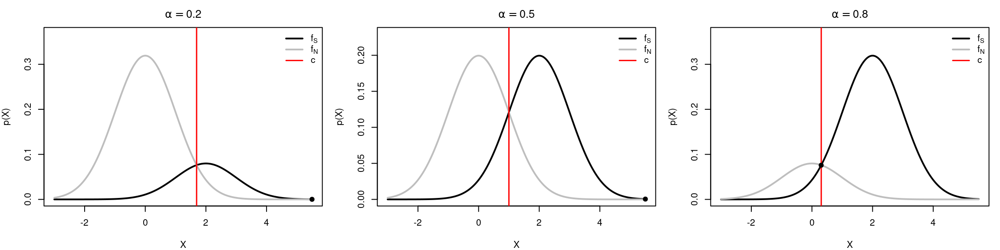
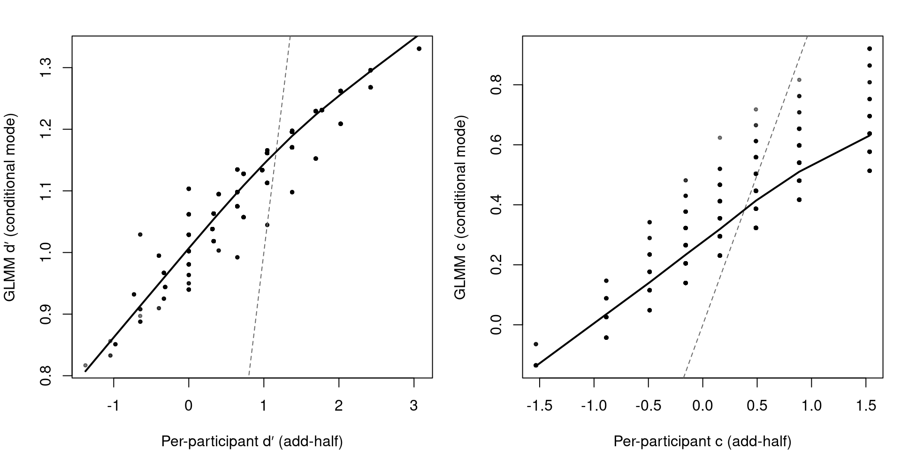

Try \(\alpha \in \left\{ 0.2, 0.5, 0.8 \right\}\). Observe how the scaling changes and \(c\) moves with the cross-over.
Code
d_prime <-2sigma <-1alphas <-c(0.2, 0.5, 0.8)x <-seq(-3, 5.5, length.out =500)op <-par(no.readonly =TRUE); on.exit(par(op), add =TRUE)par(mfrow =c(1, 3), mar =c(4, 4, 2.5, 1))for (alpha in alphas) { c_opt <-criterion_ev(d_prime, alpha) dens <-sdtdens(x, d_prime, alpha); fS <- dens$fS; fN <- dens$fN ylim <-c(0, 1.15*max(fS, fN))plot(x, fS, type ="l", lwd =2, col ="black",xlab ="X", ylab ="p(X)", ylim = ylim, main =bquote(alpha == .(alpha)))lines(x, fN, lwd =2, col ="grey")abline(v = c_opt, lwd =1.5, col ="red")# cross-over point marker i_star <-which.min(abs(fS - fN)); points(x[i_star], fS[i_star], pch =19)legend("topright", c(expression(f[S]), expression(f[N]), "c"), col =c("black","grey","red"), lwd =c(2,2,1.5), bty ="n")}

Activity 3 — Estimation & ROC curve
We’ll estimate \(d'\) and \(c\) using
\[\hat c = -\Phi^{-1}\!\left(\hat p_{\mathrm{FA}}\right),\qquad\]\[\hat d' = \Phi^{-1}\!\left(\hat p_{\mathrm{H}}\right) - \Phi^{-1}\!\left(\hat p_{\mathrm{FA}}\right).\]
Code
# Simulated example (as in slides)set.seed(1)N <-150pH <-0.9pFA <-0.1set.seed(1)H <-rbinom(1, N, pH)M <- N - HFA <-rbinom(1, N, pFA)CR <- N - FASDT_tab <-as.table(matrix(c(H, M, FA, CR),ncol =2,dimnames =list(Decision =c("Yes","No"),Stimulus =c("Signal","Not Signal"))))SDT_tab
Stimulus
Decision Signal Not Signal
Yes 137 14
No 13 136
From the table, we can compute the appropriate fractions and then the MLE estimates
Code
nS <- H + M # number of signal trialsnN <- FA + CR # number of noise-only trialspH_hat <- H/nSpFA_hat <- FA/nNc_hat <--qnorm(pFA_hat)dprime_hat <-qnorm(pH_hat) -qnorm(pFA_hat)round(c(d_prime = dprime_hat, c = c_hat,pH_hat = pH_hat, pFA_hat = pFA_hat), 4)
d_prime c pH_hat pFA_hat
2.6821 1.3205 0.9133 0.0933
Note that we may have that observed fraction of hits and false alarms turn out to be zero or 1, which is problematic as it would result in \(\pm \infty\) z-score (quantile) values. To avoid this issue, in practice we often apply a correction to compute the probabilities:
By adding 0.5 to the numerator and 1 to the denominator, the correction gently shrinks extreme proportions away from 0 or 1 (toward 0.5), so the term qnorm(⋅) remains finite1.
d_prime c pH_hat pFA_hat
2.6490 1.3045 0.9106 0.0960
ROC curve
Let’s now draw the ROC or iso-sensitivity curve for this simulated dataset. In order to do this, we first set a grid of possible criterion values, and compute the predicted \(p(\text{H})\) and \(p(\text{FA})\) for each value. We can also compute the area under the curve (AUC) using a trapezoidal rule and compare to the analytical expression.
Optional: Parametric bootstrap SEs for \(d'\) and \(c\)
We’ll bootstrap from the model-implied rates under EV-SDT using the current \(\hat d'\) and \(\hat c\) estimates: \(p_{\mathrm{FA}} = 1-\Phi(\hat c)\), \(p_{\mathrm{H}} = 1-\Phi(\hat c-\hat d')\).
Each bootstrap sample re-estimates using the same formulas as above.
Code
# Assumes you already have: H, M, FA, CR, c_hat, dprime_hat# and p_hat(x, n) = (x + 0.5)/(n + 1) defined earlier.nS <- H + MnN <- FA + CR# Model-implied probabilities under EV-SDTpFA_mle <-1-pnorm(c_hat)pH_mle <-1-pnorm(c_hat - dprime_hat)# Parametric bootstrapset.seed(2025)B <-2000boot <-replicate(B, { Hs <-rbinom(1, nS, pH_mle) FAs <-rbinom(1, nN, pFA_mle)# Re-estimate using the SAME estimator (with correction) pH_b <-p_hat(Hs, nS) pFA_b <-p_hat(FAs, nN) c_b <--qnorm(pFA_b) d_b <-qnorm(pH_b) -qnorm(pFA_b)c(dprime = d_b, c = c_b)})# Standard errors and percentile CIsboot_se <-apply(boot, 1, sd)boot_ci <-t(apply(boot, 1, function(v) quantile(v, c(0.025, 0.975))))round(boot_se, 3)
dprime c
0.203 0.139
Code
round(boot_ci, 3)
2.5% 97.5%
dprime 2.262 3.066
c 1.041 1.587
Activity 4 — Estimation as GLM
We’ll fit a probit GLM to the 2×2 counts and extract (d’) as the slope.
Code
# Using the counts already defined: H, M, FA, CRSDT_tab
Stimulus
Decision Signal Not Signal
Yes 137 14
No 13 136
Code
# 1) Build a counts data frame: Yes/No by state (S = 0 Noise, 1 Signal)dat <-data.frame(yes =c(FA, H), # p(Yes | Noise), p(Yes | Signal)no =c(CR, M),S =c(0, 1))# 2) Fit probit GLM (binomial with aggregated counts)fit <-glm(cbind(yes, no) ~ S, family =binomial(link ="probit"), data = dat)coef(fit)
(Intercept) S
-1.320504 2.682075
Code
summary(fit)
Call:
glm(formula = cbind(yes, no) ~ S, family = binomial(link = "probit"),
data = dat)
Coefficients:
Estimate Std. Error z value Pr(>|z|)
(Intercept) -1.3205 0.1424 -9.275 <2e-16 ***
S 2.6821 0.2036 13.175 <2e-16 ***
---
Signif. codes: 0 '***' 0.001 '**' 0.01 '*' 0.05 '.' 0.1 ' ' 1
(Dispersion parameter for binomial family taken to be 1)
Null deviance: 2.3439e+02 on 1 degrees of freedom
Residual deviance: 2.2204e-15 on 0 degrees of freedom
AIC: 12.716
Number of Fisher Scoring iterations: 3
The GLM and the analytic MLEs (from Activity 3) should agree (up to small sampling noise and any edge corrections used).
Optional: Using a Bayesian framework to set edge correction
While off-the-shelf stats packages do not allows setting an edge correction as we did with the MLE estimators, this is possible adopting a Bayesian framework.
A simple approach using the brms package could be:
This puts a zero-centred normal prior on the probit scale (intercept/slope). It gently shrinks \(p\) (the binomial proportions) toward 0.5, avoiding infinite z-scores—though it’s not identical to the “add-half” \(\frac{+0.5}{+1}\) correction.
To set a prior that exactly matches the correction the simplest approach is to code it directly in a probabilistic programming language like Stan including the Jeffreys prior \(\text{Beta} \left(\frac{1}{2}, \frac{1}{2}\right)\) explicitly:
Code
library(rstan)stan_code <-"data { int<lower=0> nS; // # signal trials int<lower=0> nN; // # noise trials int<lower=0> H; // hits int<lower=0> FA; // false alarms}parameters { real<lower=0, upper=1> pH; // P(Yes|Signal) real<lower=0, upper=1> pFA; // P(Yes|Noise)}transformed parameters { real c = -inv_Phi(pFA); real dprime = inv_Phi(pH) - inv_Phi(pFA);}model { pH ~ beta(0.5, 0.5); pFA ~ beta(0.5, 0.5); H ~ binomial(nS, pH); FA ~ binomial(nN, pFA);}"# Stan requires data in a list formatstan_dat <-list(nS = dat$yes[dat$S==1] + dat$no[dat$S==1],nN = dat$yes[dat$S==0] + dat$no[dat$S==0],H = dat$yes[dat$S==1],FA = dat$yes[dat$S==0])# run sampling from posteriorfit <-stan(model_code = stan_code,data = stan_dat,iter =2000,chains =4,cores =4)# summary of posterior drawsprint(fit, pars=c("c","dprime"), probs =c(0.025, 0.975))
Inference for Stan model: anon_model.
4 chains, each with iter=2000; warmup=1000; thin=1;
post-warmup draws per chain=1000, total post-warmup draws=4000.
mean se_mean sd 2.5% 97.5% n_eff Rhat
c 1.32 0 0.14 1.05 1.61 3195 1
dprime 2.68 0 0.20 2.29 3.09 3076 1
Samples were drawn using NUTS(diag_e) at Wed Sep 3 12:21:16 2025.
For each parameter, n_eff is a crude measure of effective sample size,
and Rhat is the potential scale reduction factor on split chains (at
convergence, Rhat=1).
Activity 4 — Multilevel EV-SDT
We will use data from a study about misinformation in which participants were asked to discriminate true and false statements (Lisi, 2023). Participants judged whether short statements were true or false. For each trial you have: - respT (0/1): participant judged the statement True (1) or not (0) - isTrue (0/1): whether the statement was actually true (1) or noise/false (0) - id: participant ID (just 14 trials per person) - type: item category; we use type == "science" here.
Code
d <-read.csv("./data/Lisi2023_covidmisinfo.csv")# subset to "science"dd <-subset(d, type =="science")str(dd)
Why is the GLMM slope > average per-participant \(d'\)?
The add-half correction have a strong effect with only 14 trials (it’s like adding one trial)
Tends to pull \(p(H)\) down and push \(p(FA)\) up, so qnorm(pH) - qnorm(pFA) shrinks (smaller \(d'\))
the GLMM pools information across participants: it uses partial pooling via random effects and doesn’t enforce add-half shrinkage on each person and as result its population slope isn’t dragged down
In general, with few trials and rates far from 0.5, add-half can notably compress probits. GLMMs mitigate this via pooling
Compare individual estimates
We can plot individual estiamtes from the multilevel model against the par-participant ones:
Code
co_id <-coef(m)$idglmm_ind <-data.frame(id =as.integer(rownames(co_id)),dprime_glmm = co_id[,"isTrue"], # slope = d'c_glmm =-co_id[,"(Intercept)"] # -intercept = c)cmp <-merge(per_df[, c("id","dprime","criterion")], glmm_ind, by ="id")par(mfrow =c(1,2), mar =c(4,4,2,1))# d′: per-participant (x) vs GLMM (y)plot(cmp$dprime, cmp$dprime_glmm,xlab ="Per-participant d′ (add-half)", ylab ="GLMM d′ (conditional mode)",pch =19, cex = .5, col =rgb(0,0,0,.5))abline(0, 1, lty =2, col ="grey40")lines(lowess(cmp$dprime, cmp$dprime_glmm, f = .7), lwd =2)# c: per-participant (x) vs GLMM (y)plot(cmp$criterion, cmp$c_glmm,xlab ="Per-participant c (add-half)", ylab ="GLMM c (conditional mode)",pch =19, cex = .5, col =rgb(0,0,0,.5))abline(0, 1, lty =2, col ="grey40")lines(lowess(cmp$criterion, cmp$c_glmm, f = .7), lwd =2)

This reveal the compression or “shrinkage” in the multilevel model, which mitigates the large spread of values in the individual estimates.
Activity 5 — Unequal-variance SDT
We’ll (1) simulate UV–SDT data at ≥2 criteria, then (2) maximise the binomial likelihood over \((d', \sigma, \{\log\beta_j\})\).
The decision rule is “Yes” in the two tails where \(\mathrm{LLR}(x)=\log\!\frac{f_S(x)}{f_N(x)} > \log\beta\).
For Gaussian UV–SDT with noise \(\mathcal{N}(0,1)\), signal \(\mathcal{N}(d',\sigma^2)\): \[\mathrm{LLR}(x)=-\frac{(1-\sigma^2)x^2 - 2d'x + d'^2 + 2\sigma^2\log\sigma}{2\sigma^2}.\]
Solving \(\mathrm{LLR}(x)=\log\beta\) gives two criteria \(c_1<c_2\). Then
Let’s simulate some data. Note that we first write a function that compute the two criteria for a set of parameter, then use that to compute the probabilities, and finally use these probabilities to simulare single-trial responses
Code
# 1) Simulate UV–SDT data at multiple log-beta (criteria) levelsset.seed(1)dp <-1.0sigS <-1.5# signal SD (> 1)N <-2000# per state (Noise/Signal) per criterionlb <-c(-0.5, 0, 1) # log-beta levels (can add more)# Solve for the two criteria given (d', sigma, logbeta)uv_criteria <-function(dp, sig, logbeta) { a <-1- sig^2 b <--2* dp c <- dp^2+2* sig^2* (log(sig) + logbeta)# Equal-variance limit handled separatelyif (abs(a) <1e-12) return(dp/2+ logbeta/dp) D <- b^2-4* a * cif (D <=0) return(numeric(0)) # no real roots (penalise later)sort((-b +c(-1, 1) *sqrt(D)) / (2* a))}# Compute P(Yes|Noise) and P(Yes|Signal) for a given logbetauv_probs <-function(dp, sig, logbeta) { crit <-uv_criteria(dp, sig, logbeta)if (length(crit) !=2L) return(c(pYesN =NA_real_, pYesS =NA_real_)) c1 <- crit[1]; c2 <- crit[2] pYesN <-pnorm(c1) + (1-pnorm(c2)) pYesS <-pnorm((c1 - dp)/sig) + (1-pnorm((c2 - dp)/sig))c(pYesN = pYesN, pYesS = pYesS)}# Simulate aggregated counts for each criterion levelsim_list <-lapply(seq_along(lb), function(j) { pr <-uv_probs(dp, sigS, lb[j])data.frame(cond = j,yN =rbinom(1, N, pr["pYesN"]), nN = N, # Yes under NoiseyS =rbinom(1, N, pr["pYesS"]), nS = N # Yes under Signal )})dat_uv <-do.call(rbind, sim_list)dat_uv
Then find the parameter using direct numerical optimization. WE first write a function that compute the negative log-likelihood of the data (given a set of parameter values) and then optimise it directly using the function optim() in R.
Code
# 2) Direct MLE by optim # Negative log-likelihood for aggregated datanll_uvsdt <-function(par, dat) { dp <- par[1]; sig <- par[2]; lb <- par[-(1:2)]# simple box constraints via penaltiesif (dp <=0|| sig <=0) return(1e9) p <-sapply(lb, function(lbj) uv_probs(dp, sig, lbj))if (any(!is.finite(p))) return(1e9) # invalid (no real roots) → penalise pN <- p["pYesN", ] pS <- p["pYesS", ]if (any(pN <=0| pN >=1| pS <=0| pS >=1)) return(1e9)# Match by condition index# (assumes dat rows are in the same order as lb; you can match(dat$cond, seq_along(lb))) yN <- dat$yN; nN <- dat$nN yS <- dat$yS; nS <- dat$nS# Binomial log-likelihood (omit constants)-sum( yN *log(pN) + (nN - yN) *log(1- pN) + yS *log(pS) + (nS - yS) *log(1- pS) )}# Starting values (rough): d' ~ 1, sigma ~ 1.5, logbeta ~ observed proportionspar0 <-c(1.1, 1.6, rep(1.2, length(lb)))fit <-optim(par0, nll_uvsdt, dat = dat_uv,method ="L-BFGS-B",lower =c(1e-4, 1e-3, rep(-20, length(lb))),upper =c(Inf, Inf, rep( 20, length(lb))),hessian =TRUE)est <- fit$parnames(est) <-c("dprime", "sigma", paste0("logbeta_", seq_along(lb)))est
# Standard errors from the observed information (inverse Hessian)if (!any(!is.finite(fit$hessian)) &&all(eigen(fit$hessian, symmetric =TRUE)$values >0)) { se <-sqrt(diag(solve(fit$hessian)))} else { se <-rep(NA_real_, length(est))}cbind(Estimate =round(est, 3), SE =round(se, 3), z =round(est / se, 2))
Note that this “corrected” estimator correspond the posterior mean under a non-informative Jeffreys prior \(\text{Beta}\left(\frac{1}{2},\frac{1}{2}\right)\) for a binomial rate. So it can be justified from a Bayesian point of view, is not just a hack.↩︎
Source Code
---title: "SDT worksheet<br> CDS Summer School"author: "Matteo Lisi"format: html: toc: true code-tools: true # run/copy buttons code-fold: showexecute: echo: true warning: false message: false---## Setup```{r}# Helper: optimal criterion for equal-variance normals (mu_N=0, mu_S=d′)# beta encodes priors/payoffs; with equal costs: beta = (1 - alpha) / alpha# (the input argument alpha is only used to compute beta when beta is not supplied)criterion_ev <-function(d_prime, alpha, beta = (1- alpha) / alpha) { (1/ d_prime) *log(beta) + d_prime /2}# Helper: scaled densities (by prior) on a gridsdtdens <-function(x, d_prime, alpha =0.5) { fS <- alpha *dnorm(x, mean = d_prime, sd =1) fN <- (1- alpha)*dnorm(x, mean =0, sd =1)list(fS = fS, fN = fN)}```## Activity 1 — Baseline ($\alpha$ = 0.5)> Goal: Plot the two scaled densities and the optimal criterion; check that c is at the cross-over point.```{r}#| fig-align: 'center'#| fig-width: 6.67#| fig-height: 4# Settingsd_prime <-2sigma <-1alpha <-0.5x <-seq(-2, 4, length.out =1000)# 1) Compute cc_opt <-criterion_ev(d_prime, alpha)# 2) Densitiesdens <-sdtdens(x, d_prime, alpha) fS <- dens$fSfN <- dens$fN# 3) Plot + cross-over checkylim <-c(0, 1.1*max(fS, fN))plot(x, fS, type ="l", lwd =2, col ="black",xlab ="X", ylab ="p(X)", ylim = ylim)lines(x, fN, lwd =2, col ="grey")abline(v = c_opt, lwd =1.5, col ="red")legend("topleft", c(expression(f[S]), expression(f[N])), col =c("black","grey"),lwd =2, bty ="n")# numerical cross-over (for display)i_star <-which.min(abs(fS - fN))x_star <- x[i_star]points(x_star, fS[i_star], pch =19)mtext(sprintf("cross-over ≈ %.3f | c = %.3f", x_star, c_opt), side =3, line =0.25, cex =0.9)```::: callout-tip#### Optional: verify with a root finderWe can also use a numerical procedure to find the threshold value for which signal and noise have the same probability density:```{r}root <-uniroot(function(z) { alpha*dnorm(z, d_prime, sigma) - (1- alpha)*dnorm(z, 0, sigma)}, c(-10, 10))$rootroot```:::## Activity 2 — Unequal priors> Try $\alpha \in \left\{ 0.2, 0.5, 0.8 \right\}$. Observe how the scaling changes and $c$ moves with the cross-over.```{r}#| fig-align: 'center'#| fig-width: 12#| fig-height: 3d_prime <-2sigma <-1alphas <-c(0.2, 0.5, 0.8)x <-seq(-3, 5.5, length.out =500)op <-par(no.readonly =TRUE); on.exit(par(op), add =TRUE)par(mfrow =c(1, 3), mar =c(4, 4, 2.5, 1))for (alpha in alphas) { c_opt <-criterion_ev(d_prime, alpha) dens <-sdtdens(x, d_prime, alpha); fS <- dens$fS; fN <- dens$fN ylim <-c(0, 1.15*max(fS, fN))plot(x, fS, type ="l", lwd =2, col ="black",xlab ="X", ylab ="p(X)", ylim = ylim, main =bquote(alpha == .(alpha)))lines(x, fN, lwd =2, col ="grey")abline(v = c_opt, lwd =1.5, col ="red")# cross-over point marker i_star <-which.min(abs(fS - fN)); points(x[i_star], fS[i_star], pch =19)legend("topright", c(expression(f[S]), expression(f[N]), "c"), col =c("black","grey","red"), lwd =c(2,2,1.5), bty ="n")}```## Activity 3 — Estimation & ROC curveWe’ll estimate $d'$ and $c$ using$$\hat c = -\Phi^{-1}\!\left(\hat p_{\mathrm{FA}}\right),\qquad$$$$\hat d' = \Phi^{-1}\!\left(\hat p_{\mathrm{H}}\right) - \Phi^{-1}\!\left(\hat p_{\mathrm{FA}}\right).$$```{r}# Simulated example (as in slides)set.seed(1)N <-150pH <-0.9pFA <-0.1set.seed(1)H <-rbinom(1, N, pH)M <- N - HFA <-rbinom(1, N, pFA)CR <- N - FASDT_tab <-as.table(matrix(c(H, M, FA, CR),ncol =2,dimnames =list(Decision =c("Yes","No"),Stimulus =c("Signal","Not Signal"))))SDT_tab```From the table, we can compute the appropriate fractions and then the MLE estimates```{r}nS <- H + M # number of signal trialsnN <- FA + CR # number of noise-only trialspH_hat <- H/nSpFA_hat <- FA/nNc_hat <--qnorm(pFA_hat)dprime_hat <-qnorm(pH_hat) -qnorm(pFA_hat)round(c(d_prime = dprime_hat, c = c_hat,pH_hat = pH_hat, pFA_hat = pFA_hat), 4)```Note that we may have that observed fraction of hits and false alarms turn out to be zero or 1, which is problematic as it would result in $\pm \infty$ z-score (quantile) values. To avoid this issue, in practice we often apply a correction to compute the probabilities:```{r}# Edge correction: (x + 0.5) / (n + 1)p_hat <-function(x, n){(x +0.5) / (n +1)}```By adding 0.5 to the numerator and 1 to the denominator, the correction gently shrinks extreme proportions away from 0 or 1 (toward 0.5), so the term `qnorm(⋅)` remains finite[^loglinearcorrection].```{r}pH_hat <-p_hat(H, nS)pFA_hat <-p_hat(FA, nN)c_hat <--qnorm(pFA_hat)dprime_hat <-qnorm(pH_hat) -qnorm(pFA_hat)round(c(d_prime = dprime_hat, c = c_hat,pH_hat = pH_hat, pFA_hat = pFA_hat), 4)```[^loglinearcorrection]: Note that this "corrected" estimator correspond the posterior mean under a non-informative Jeffreys prior $\text{Beta}\left(\frac{1}{2},\frac{1}{2}\right)$ for a binomial rate. So it can be justified from a Bayesian point of view, is not just a hack.#### ROC curveLet's now draw the ROC or _iso-sensitivity_ curve for this simulated dataset. In order to do this, we first set a grid of possible criterion values, and compute the predicted $p(\text{H})$ and $p(\text{FA})$ for each value. We can also compute the area under the curve (AUC) using a trapezoidal rule and compare to the analytical expression.```{r}#| fig-align: 'center'#| fig-width: 4.8#| fig-height: 5# Theoretical ROC from d'c_grid <-seq(-6, 6, length.out =500)FA_curve <-pnorm(-c_grid)H_curve <-pnorm(dprime_hat - c_grid)# AUC: analytic and numeric (trapezoid)auc_theory <-pnorm(dprime_hat /sqrt(2))ord <-order(FA_curve)auc_num <-sum(diff(FA_curve[ord]) * (head(H_curve[ord], -1) +tail(H_curve[ord], -1)) /2)# Plotplot(FA_curve, H_curve, type="l", lwd=2, col="black",xlab="False alarm rate (FA)", ylab="Hit rate (H)",xlim=c(0,1),ylim=c(0,1))abline(0,1,lty=2,col="grey60") # chance linepoints(pFA_hat, pH_hat, pch=19, cex=1.5) # observed pointlegend("bottomright",legend =c("ROC (EV–SDT)", "chance", "observed (FA,H)"),lwd =c(2,1,NA), lty =c(1,2,NA), pch =c(NA, NA, 19),col =c("black","grey60","black"), bty="n")# compare AUC valuesc(theoretical=auc_theory, numerical=auc_num)```::: callout-tip#### Optional: Parametric bootstrap SEs for $d'$ and $c$We’ll bootstrap from the **model-implied** rates under EV-SDT using the current$\hat d'$ and $\hat c$ estimates: $p_{\mathrm{FA}} = 1-\Phi(\hat c)$, $p_{\mathrm{H}} = 1-\Phi(\hat c-\hat d')$. Each bootstrap sample re-estimates using the **same** formulas as above.```{r}# Assumes you already have: H, M, FA, CR, c_hat, dprime_hat# and p_hat(x, n) = (x + 0.5)/(n + 1) defined earlier.nS <- H + MnN <- FA + CR# Model-implied probabilities under EV-SDTpFA_mle <-1-pnorm(c_hat)pH_mle <-1-pnorm(c_hat - dprime_hat)# Parametric bootstrapset.seed(2025)B <-2000boot <-replicate(B, { Hs <-rbinom(1, nS, pH_mle) FAs <-rbinom(1, nN, pFA_mle)# Re-estimate using the SAME estimator (with correction) pH_b <-p_hat(Hs, nS) pFA_b <-p_hat(FAs, nN) c_b <--qnorm(pFA_b) d_b <-qnorm(pH_b) -qnorm(pFA_b)c(dprime = d_b, c = c_b)})# Standard errors and percentile CIsboot_se <-apply(boot, 1, sd)boot_ci <-t(apply(boot, 1, function(v) quantile(v, c(0.025, 0.975))))round(boot_se, 3)round(boot_ci, 3)```:::## Activity 4 — Estimation as GLMWe’ll fit a probit GLM to the 2×2 counts and extract \(d'\) as the slope.```{r}# Using the counts already defined: H, M, FA, CRSDT_tab# 1) Build a counts data frame: Yes/No by state (S = 0 Noise, 1 Signal)dat <-data.frame(yes =c(FA, H), # p(Yes | Noise), p(Yes | Signal)no =c(CR, M),S =c(0, 1))# 2) Fit probit GLM (binomial with aggregated counts)fit <-glm(cbind(yes, no) ~ S, family =binomial(link ="probit"), data = dat)coef(fit)summary(fit)# 3) Map coefficients -> SDT parametersb0 <-unname(coef(fit)[["(Intercept)"]])b1 <-unname(coef(fit)[["S"]])dprime_hat_glm <- b1 # β1 = d′c_hat_glm <--b0 # −β0 = cround(c(d_prime = dprime_hat_glm, c = c_hat_glm), 3)# 4) Standard error and 95% CI for d′se <-summary(fit)$coefficients[,"Std. Error"] # NB: equivalent to: sqrt(diag(vcov(fit)))se_dprime <-unname(se["S"])ci_dprime <- dprime_hat_glm +c(-1, 1) *qnorm(0.975) * se_dprimeround(c(se_dprime = se_dprime, ci_lo = ci_dprime[1], ci_hi = ci_dprime[2]), 3)# 5) (Sanity check) Model-implied FA/H rates from (d′, c)pFA_glm <-pnorm(-c_hat_glm) # = 1 - Φ(c) = Φ(-c)pH_glm <-pnorm(dprime_hat_glm - c_hat_glm) # = Φ(d′ - c)round(c(pFA_glm = pFA_glm, pH_glm = pH_glm), 3)```The GLM and the analytic MLEs (from Activity 3) should agree (up to small sampling noise and any edge corrections used). ::: callout-tip#### Optional: Using a Bayesian framework to set edge correctionWhile off-the-shelf stats packages do not allows setting an edge correction as we did with the MLE estimators, this is possible adopting a Bayesian framework.A simple approach using the `brms` package could be:```{r, eval=FALSE}library(brms)success <- dat$yes; total <- dat$yes + dat$nofit_bayes <- brm(success | trials(total) ~ S, family = binomial(link = "probit"), prior = c(set_prior("normal(0, 2.5)", class = "b")), data = data.frame(success, total, S = dat$S), silent = 2)post <- fixef(fit_bayes)dprime_hat_bayes <- post["S","Estimate"] # slopec_hat_bayes <- -post["Intercept","Estimate"] # -intercept```This puts a zero-centred normal prior on the **probit scale** (intercept/slope). It gently shrinks $p$ (the binomial proportions) toward 0.5, avoiding infinite z-scores—though it’s **not identical** to the "add-half" $\frac{+0.5}{+1}$ correction.To set a prior that exactly matches the correction the simplest approach is to code it directly in a probabilistic programming language like [Stan](https://mc-stan.org/about/) including the Jeffreys prior $\text{Beta} \left(\frac{1}{2}, \frac{1}{2}\right)$ explicitly:```{r, eval=FALSE}library(rstan)stan_code <- "data { int<lower=0> nS; // # signal trials int<lower=0> nN; // # noise trials int<lower=0> H; // hits int<lower=0> FA; // false alarms}parameters { real<lower=0, upper=1> pH; // P(Yes|Signal) real<lower=0, upper=1> pFA; // P(Yes|Noise)}transformed parameters { real c = -inv_Phi(pFA); real dprime = inv_Phi(pH) - inv_Phi(pFA);}model { pH ~ beta(0.5, 0.5); pFA ~ beta(0.5, 0.5); H ~ binomial(nS, pH); FA ~ binomial(nN, pFA);}"# Stan requires data in a list formatstan_dat <- list(nS = dat$yes[dat$S==1] + dat$no[dat$S==1], nN = dat$yes[dat$S==0] + dat$no[dat$S==0], H = dat$yes[dat$S==1], FA = dat$yes[dat$S==0])# run sampling from posteriorfit <- stan( model_code = stan_code, data = stan_dat, iter = 2000, chains = 4, cores = 4)# summary of posterior drawsprint(fit, pars=c("c","dprime"), probs = c(0.025, 0.975))``````{r, echo=FALSE}fit <- readRDS("./code/stan_sdt_acti4.rds")print(fit, pars=c("c","dprime"), probs = c(0.025, 0.975))```:::## Activity 4 — Multilevel EV-SDTWe will use data from a study about misinformation in which participants were asked to discriminate true and false statements [(Lisi, 2023)](https://royalsocietypublishing.org/doi/full/10.1098/rsos.230417). Participants judged whether short statements were true or false.For each trial you have:- `respT` (0/1): participant judged the statement True (1) or not (0)- `isTrue` (0/1): whether the statement was actually true (1) or noise/false (0)- `id`: participant ID (just 14 trials per person)- `type`: item category; we use `type == "science"` here.```{r}d <-read.csv("./data/Lisi2023_covidmisinfo.csv")# subset to "science"dd <-subset(d, type =="science")str(dd)```We’ll work on the “science” subset and compare two estimates:1) **GLMM (probit)** fixed slope (population-level \(d'\)) 2) **Per-participant** \(d'\) with add-half correction, then averaged### GLMM```{r}library(lme4)# --- (1) Multilevel probit GLM (random intercept & slope by id)m <-glmer(respT ~ isTrue + (isTrue | id),family =binomial(link ="probit"), data = dd)cf <-coef(summary(m))b0 <-unname(cf["(Intercept)", "Estimate"])b1 <-unname(cf["isTrue", "Estimate"]) # <-- GLMM slope = population d'se1 <-unname(cf["isTrue", "Std. Error"])dprime_glmm <- b1c_glmm <--b0# group-level parametersround(c(dprime_glmm = dprime_glmm, c_glmm = c_glmm), 3)```### Per participant (with add-half correction)```{r}# --- (2) Per-participant add-half corrected d' p_hat <-function(x, n) (x +0.5) / (n +1)by_id <-split(dd, dd$id)per <-lapply(by_id, function(s) { id <-unique(s$id) nS <-sum(s$isTrue ==1); nN <-sum(s$isTrue ==0) H <-sum(s$isTrue ==1& s$respT ==1) FA <-sum(s$isTrue ==0& s$respT ==1) pH <-p_hat(H, nS) pFA <-p_hat(FA, nN) dprime <-qnorm(pH) -qnorm(pFA) criterion <--qnorm(pFA)data.frame(id, nS, nN, H, FA, pH, pFA, dprime, criterion)})per_df <-do.call(rbind, per)# average parametersround(c(dprime =mean(per_df$dprime), c=mean(per_df$criterion)), 3)```**Why is the GLMM slope > average per-participant $d'$?**- The add-half correction have a strong effect with only 14 trials (it's like adding one trial)- Tends to pull $p(H)$ down and push $p(FA)$ up, so `qnorm(pH) - qnorm(pFA)` shrinks (smaller $d'$)- the GLMM pools information across participants: it uses _partial pooling_ via random effects and doesn’t enforce add-half shrinkage on each person and as result its population slope isn’t dragged downIn general, with few trials and rates far from 0.5, add-half can notably compress probits. GLMMs mitigate this via pooling### Compare individual estimatesWe can plot individual estiamtes from the multilevel model against the par-participant ones:```{r}#| fig-align: 'center'#| fig-width: 10#| fig-height: 5co_id <-coef(m)$idglmm_ind <-data.frame(id =as.integer(rownames(co_id)),dprime_glmm = co_id[,"isTrue"], # slope = d'c_glmm =-co_id[,"(Intercept)"] # -intercept = c)cmp <-merge(per_df[, c("id","dprime","criterion")], glmm_ind, by ="id")par(mfrow =c(1,2), mar =c(4,4,2,1))# d′: per-participant (x) vs GLMM (y)plot(cmp$dprime, cmp$dprime_glmm,xlab ="Per-participant d′ (add-half)", ylab ="GLMM d′ (conditional mode)",pch =19, cex = .5, col =rgb(0,0,0,.5))abline(0, 1, lty =2, col ="grey40")lines(lowess(cmp$dprime, cmp$dprime_glmm, f = .7), lwd =2)# c: per-participant (x) vs GLMM (y)plot(cmp$criterion, cmp$c_glmm,xlab ="Per-participant c (add-half)", ylab ="GLMM c (conditional mode)",pch =19, cex = .5, col =rgb(0,0,0,.5))abline(0, 1, lty =2, col ="grey40")lines(lowess(cmp$criterion, cmp$c_glmm, f = .7), lwd =2)```This reveal the compression or "shrinkage" in the multilevel model, which mitigates the large spread of values in the individual estimates.## Activity 5 — Unequal-variance SDTWe’ll (1) simulate UV–SDT data at ≥2 criteria, then (2) maximise the binomial likelihood over $(d', \sigma, \{\log\beta_j\})$. The decision rule is "Yes" in the **two tails** where $\mathrm{LLR}(x)=\log\!\frac{f_S(x)}{f_N(x)} > \log\beta$.For Gaussian UV–SDT with noise $\mathcal{N}(0,1)$, signal $\mathcal{N}(d',\sigma^2)$:$$\mathrm{LLR}(x)=-\frac{(1-\sigma^2)x^2 - 2d'x + d'^2 + 2\sigma^2\log\sigma}{2\sigma^2}.$$Solving $\mathrm{LLR}(x)=\log\beta$ gives two criteria $c_1<c_2$. Then$$\begin{aligned}p(\text{Yes}\mid N) &= \Phi(c_1)+\bigl[1-\Phi(c_2)\bigr],\\p(\text{Yes}\mid S) &= \Phi\!\Big(\frac{c_1-d'}{\sigma}\Big)+\Bigl[1-\Phi\!\Big(\frac{c_2-d'}{\sigma}\Big)\Bigr].\end{aligned}$$Let's simulate some data. Note that we first write a function that compute the two criteria for a set of parameter, then use that to compute the probabilities, and finally use these probabilities to simulare single-trial responses```{r}# 1) Simulate UV–SDT data at multiple log-beta (criteria) levelsset.seed(1)dp <-1.0sigS <-1.5# signal SD (> 1)N <-2000# per state (Noise/Signal) per criterionlb <-c(-0.5, 0, 1) # log-beta levels (can add more)# Solve for the two criteria given (d', sigma, logbeta)uv_criteria <-function(dp, sig, logbeta) { a <-1- sig^2 b <--2* dp c <- dp^2+2* sig^2* (log(sig) + logbeta)# Equal-variance limit handled separatelyif (abs(a) <1e-12) return(dp/2+ logbeta/dp) D <- b^2-4* a * cif (D <=0) return(numeric(0)) # no real roots (penalise later)sort((-b +c(-1, 1) *sqrt(D)) / (2* a))}# Compute P(Yes|Noise) and P(Yes|Signal) for a given logbetauv_probs <-function(dp, sig, logbeta) { crit <-uv_criteria(dp, sig, logbeta)if (length(crit) !=2L) return(c(pYesN =NA_real_, pYesS =NA_real_)) c1 <- crit[1]; c2 <- crit[2] pYesN <-pnorm(c1) + (1-pnorm(c2)) pYesS <-pnorm((c1 - dp)/sig) + (1-pnorm((c2 - dp)/sig))c(pYesN = pYesN, pYesS = pYesS)}# Simulate aggregated counts for each criterion levelsim_list <-lapply(seq_along(lb), function(j) { pr <-uv_probs(dp, sigS, lb[j])data.frame(cond = j,yN =rbinom(1, N, pr["pYesN"]), nN = N, # Yes under NoiseyS =rbinom(1, N, pr["pYesS"]), nS = N # Yes under Signal )})dat_uv <-do.call(rbind, sim_list)dat_uv```Then find the parameter using direct numerical optimization. WE first write a function that compute the negative log-likelihood of the data (given a set of parameter values) and then optimise it directly using the function `optim()` in R.```{r}# 2) Direct MLE by optim # Negative log-likelihood for aggregated datanll_uvsdt <-function(par, dat) { dp <- par[1]; sig <- par[2]; lb <- par[-(1:2)]# simple box constraints via penaltiesif (dp <=0|| sig <=0) return(1e9) p <-sapply(lb, function(lbj) uv_probs(dp, sig, lbj))if (any(!is.finite(p))) return(1e9) # invalid (no real roots) → penalise pN <- p["pYesN", ] pS <- p["pYesS", ]if (any(pN <=0| pN >=1| pS <=0| pS >=1)) return(1e9)# Match by condition index# (assumes dat rows are in the same order as lb; you can match(dat$cond, seq_along(lb))) yN <- dat$yN; nN <- dat$nN yS <- dat$yS; nS <- dat$nS# Binomial log-likelihood (omit constants)-sum( yN *log(pN) + (nN - yN) *log(1- pN) + yS *log(pS) + (nS - yS) *log(1- pS) )}# Starting values (rough): d' ~ 1, sigma ~ 1.5, logbeta ~ observed proportionspar0 <-c(1.1, 1.6, rep(1.2, length(lb)))fit <-optim(par0, nll_uvsdt, dat = dat_uv,method ="L-BFGS-B",lower =c(1e-4, 1e-3, rep(-20, length(lb))),upper =c(Inf, Inf, rep( 20, length(lb))),hessian =TRUE)est <- fit$parnames(est) <-c("dprime", "sigma", paste0("logbeta_", seq_along(lb)))est# Standard errors from the observed information (inverse Hessian)if (!any(!is.finite(fit$hessian)) &&all(eigen(fit$hessian, symmetric =TRUE)$values >0)) { se <-sqrt(diag(solve(fit$hessian)))} else { se <-rep(NA_real_, length(est))}cbind(Estimate =round(est, 3), SE =round(se, 3), z =round(est / se, 2))```::: callout-tip#### Optional: Computing and plotting the ROC curve```{r}#| fig-align: 'center'#| fig-width: 4.8#| fig-height: 5# Fitted ROC curve from (d', sigma) using z-parameterization dp_hat <-unname(est["dprime"])sig_hat <-unname(est["sigma"])s_hat <-1/ sig_hat # zROC slopea_hat <- dp_hat / sig_hat # zROC interceptzFA <-seq(qnorm(1e-4), qnorm(1-1e-4), length.out =800)FA_curve <-pnorm(zFA)H_curve <-pnorm(a_hat + s_hat * zFA)# Observed conditions (with tiny clipping for plotting)pFA_obs <- dat_uv$yN / dat_uv$nNpH_obs <- dat_uv$yS / dat_uv$nSlabs <-paste0("C", seq_len(nrow(dat_uv))) # labels C1, C2, ...# Plotplot(FA_curve, H_curve, type ="l", lwd =2, col ="black",xlab ="False alarm rate (FA)", ylab ="Hit rate (H)",xlim=c(0,1), ylim=c(0,1))abline(0, 1, lty =2, col ="grey70") # chance linepoints(pFA_obs, pH_obs, pch =21, bg ="white", cex =1.2)text(pFA_obs, pH_obs, labels = labs, pos =2, cex =0.9)legend("bottomright",legend =c("Fitted ROC (UV-SDT)", "Observed criteria", "Chance"),lwd =c(2, NA, 1), lty =c(1, NA, 2),pch =c(NA, 21, NA), pt.bg =c(NA, "white", NA),col =c("black", "black", "grey70"), bty ="n")```:::